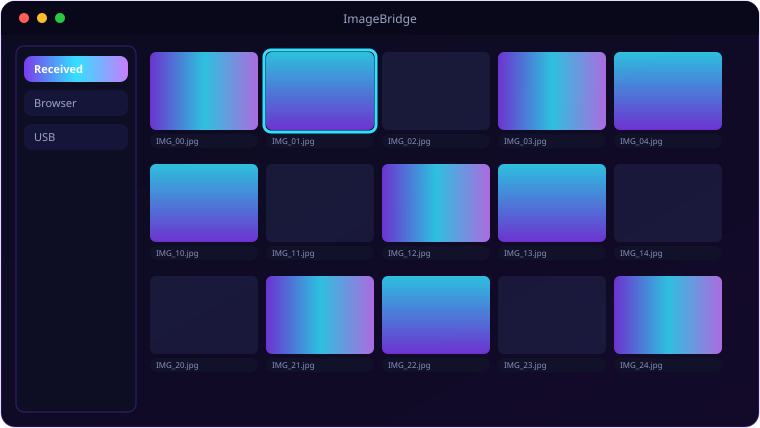

A look inside ImageBridge.

Everything ImageBridge brings to the table.
Android Sender
A full native gallery with date headers, multi-select, sort and view modes — Copy, Convert on-phone, or both, sent over Wi-Fi.
Wi-Fi Receiver
The PC app runs a Flask receiver; incoming photos land in a date-grouped thumbnail panel with a zoom lightbox.
Universal Conversion
Pillow + pillow-heif + rawpy convert HEIC/PNG/WebP/BMP/TIFF/RAW into clean JPEGs on arrival.
Built-In File Manager
A full browser tab — folder tree, thumbnail/list/detail views, search, and right-click copy/cut/paste/rename/convert.
USB / ADB Mode
Prefer a cable? Scan the device over ADB and pull all images with a progress bar.
Recycle Bin
The Android side keeps a soft-delete recycle bin with restore and permanent-delete.
System requirements.
Minimum
- OS: Windows 10 (64-bit) or Windows 11
- CPU: Dual-core, 2.0 GHz
- Memory: 4 GB RAM
- Graphics: Any DirectX 11 / integrated GPU
- Storage: 250 MB + space for your files
- Display: 1280×768 or higher
Recommended
- OS: Windows 11 (64-bit)
- CPU: Quad-core, 3.0 GHz
- Memory: 8 GB RAM
- Graphics: Dedicated GPU (optional)
- Storage: SSD with a few GB free
- Display: 1920×1080 or higher
PC and phone must be on the same Wi-Fi for wireless transfer; USB mode needs ADB drivers for your phone.
The details.
| PC app | PyQt6 + Flask receiver on port 8765 |
| Android app | Native Kotlin, minSdk 26, Room recycle bin |
| Transfer | Wi-Fi (HTTP multipart) or USB/ADB |
| Conversion | HEIC, PNG, WebP, BMP, TIFF, RAW → JPEG |
| Platform | Windows 10 / 11 + Android 8+ |
Get ImageBridge.
Beam phone photos to your PC and convert them to JPEG.
⬇ Download ImageBridgeImageBridge_Setup.exe (PC) + app-debug.apk (Android) · free